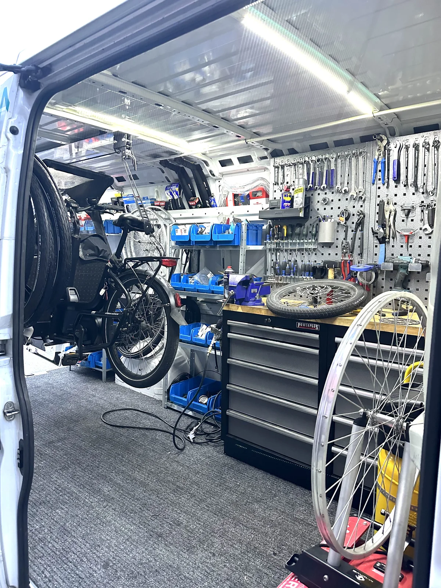
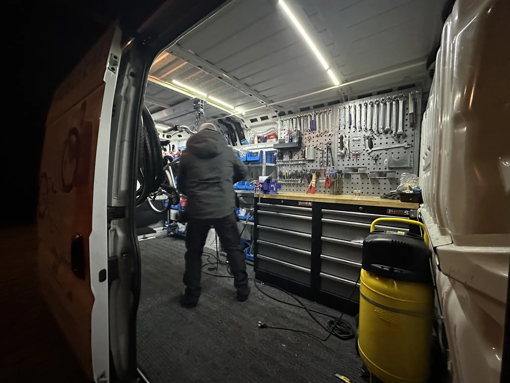
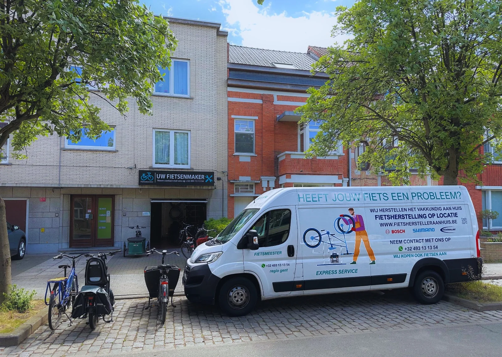
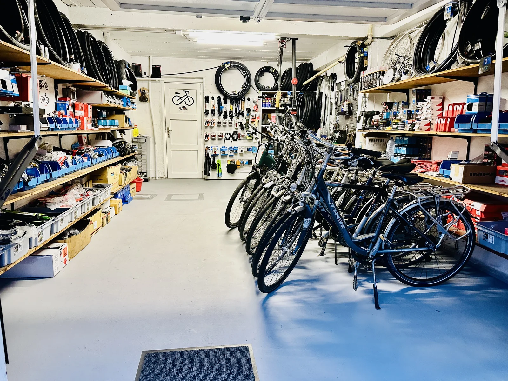
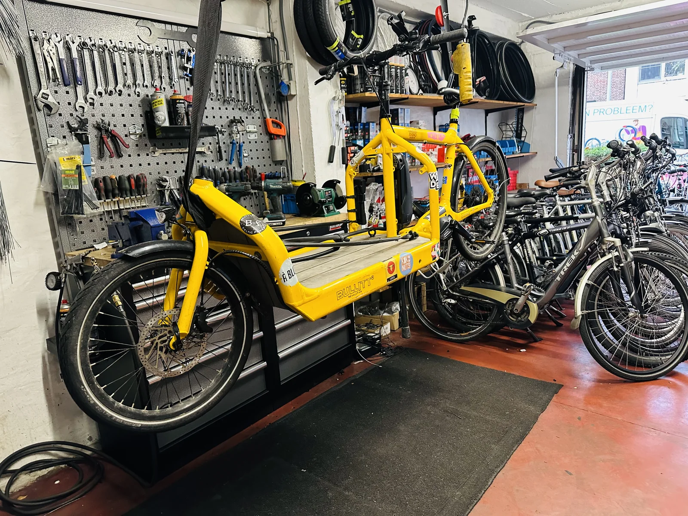
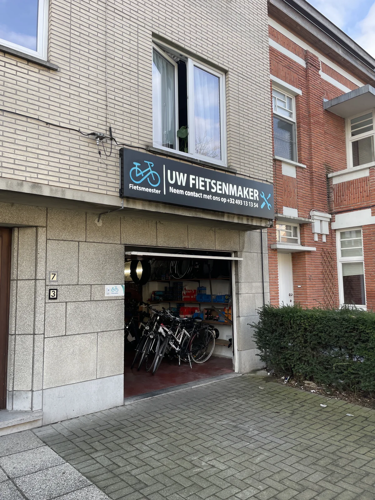
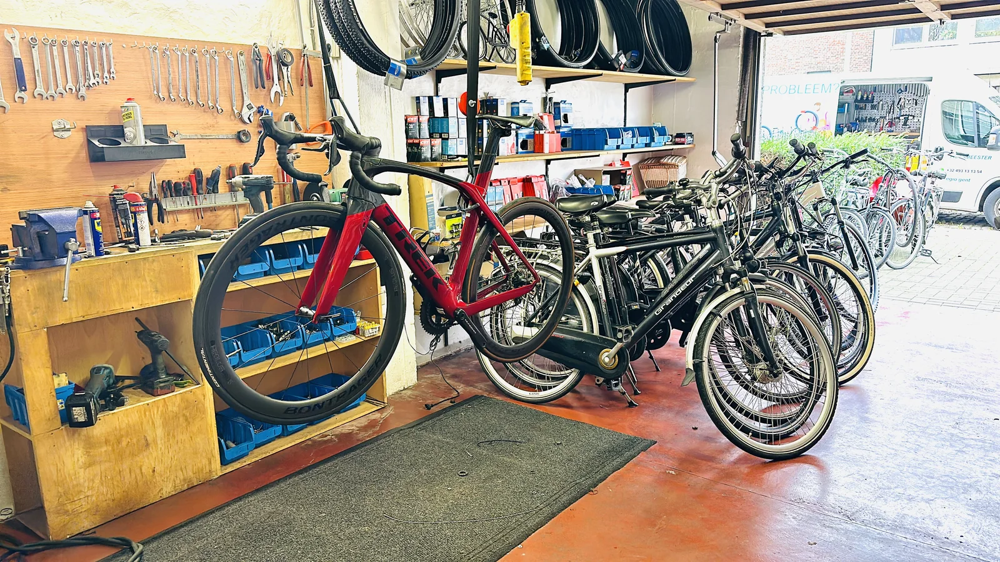
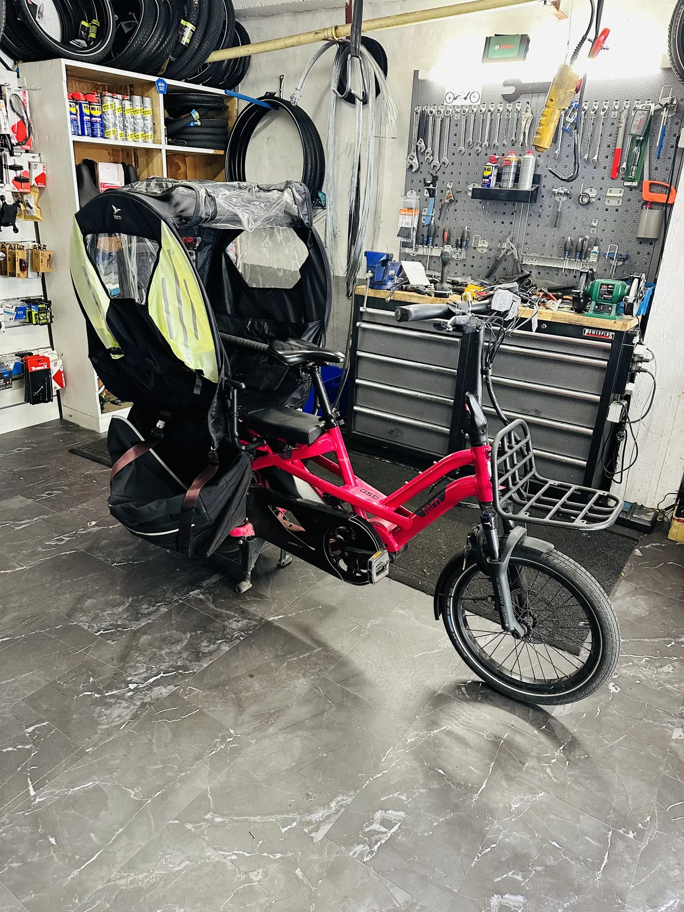

Aan huisDe werkplaats rijdt naar jou
We komen op afspraak naar je thuis en zetten je fiets daar weer in orde, ook als het er meer dan één is.
- Hoe
- Op afspraak
- Waar
- Gent en omgeving
- Afspreken
- WhatsApp of bellen
In onze bus zit een volledige werkplaats. Op afspraak zetten we je fiets bij jou thuis weer in orde. Liever zelf langskomen? Spring zonder afspraak binnen in de Schoonmeersstraat 1.
5,0★★★★★331 reviews op Google

Kies wat jou het best uitkomt. Een berichtje via WhatsApp volstaat, we antwoorden snel.

Aan huisWe komen op afspraak naar je thuis en zetten je fiets daar weer in orde, ook als het er meer dan één is.

In de werkplaatsKom zonder afspraak langs met je fiets. Een plat of een kleine herstelling is vaak dezelfde dag nog klaar, soms terwijl je even wacht.
Wielen richten, veringsonderhoud, hydraulische remmen ontluchten, aandrijving vervangen en een fiets op maat opbouwen. Elektrisch met Bosch en Shimano. En vintage fietsen: daar komen klanten graag voor terug.

Onze werkplaats ligt in de Schoonmeersstraat, vlak bij het station Gent-Sint-Pieters. Je herkent ons aan het bord boven de poort.



Ook aan huis op afspraak, en we kopen ook fietsen aan. Stuur gerust een foto.
Zonder afspraak mijn fiets binnengeleverd, en na een half uurtje al klaar! Vriendelijke mensen ook!
Fietsmeester is een aanrader, heel vlot bereikbaar via whatsapp. Fietsmeester is bij ons aan huis gekomen en heeft twee fietsen perfect in orde gesteld.
Ben hier nu reeds meermaals langsgekomen voor de reparatie van mijn vintage fiets. Altijd een super service met goede communicatie.
Ik mocht de dag zelf nog komen voor een herstel. Eerlijke prijs en goeie bediening!
Vul in wat je weet, je bericht staat meteen klaar in WhatsApp. Een foto van het probleem stuur je er gewoon achteraan.
Ik maakte deze demo voor jullie om te tonen wat er kan. Na een kort gesprek maak ik er iets veel persoonlijkers van, helemaal naar jullie wens.
Vrijblijvend. Ik kom langs of we bellen.
Op maat, op jullie eigen domein.
Geen voorschot. Jullie betalen pas als alles klaar is.
Hosting, domeinnaam en kleine wijzigingen, zoals nieuwe openingsuren.
Omdat een voorbeeld meer zegt dan een mail. Zo zien jullie meteen wat er kan, en het kost jullie niets.
Nee. Het gesprek is vrijblijvend. Vinden jullie het niks, dan is het daarmee gedaan.
Na ons gesprek staat jullie site binnen 10 tot 14 dagen online.
Zeker. Jullie domeinnaam kan gewoon blijven, de nieuwe site komt in de plaats van de oude.
Nee, dat doe ik op basis van ons gesprek. Eigen foto's zijn mooi meegenomen, maar niet nodig om te starten.